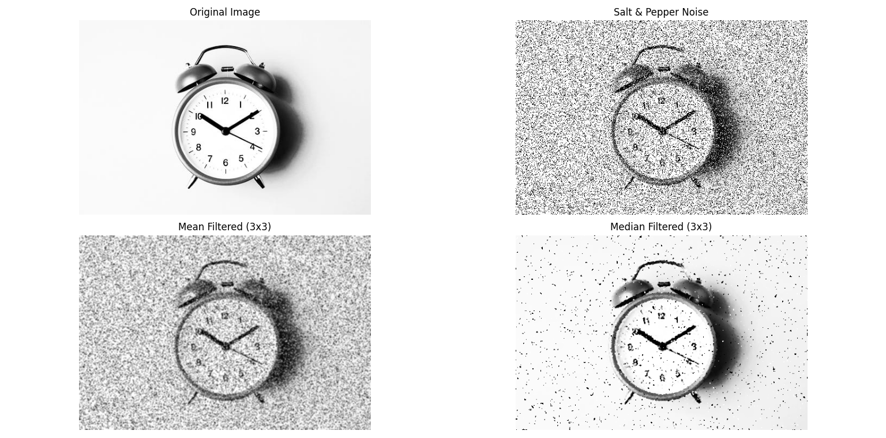

Salt & Pepper Noise
Theory
Salt and pepper noise randomly replaces some pixels in an image with extremes: white (salt) or black (pepper). It simulates impulse noise commonly introduced during image acquisition or transmission.
- White Pixels (Salt): Intensities set to maximum (255).
- Black Pixels (Pepper): Intensities set to minimum (0).
- Filtering techniques such as mean and median filters are applied to reduce noise.
- Median filter is particularly effective because it preserves edges while removing noise.
Python Code
import cv2
import numpy as np
import random
import matplotlib.pyplot as plt
def add_salt_and_pepper_noise(image, salt_prob, pepper_prob):
"""Add salt & pepper noise to an image."""
img_array = np.array(image)
height, width, _ = img_array.shape
total_pixels = height * width
salt_pixels = int(total_pixels * salt_prob)
pepper_pixels = int(total_pixels * pepper_prob)
for _ in range(salt_pixels):
row = random.randint(0, height-1)
col = random.randint(0, width-1)
img_array[row, col] = [255, 255, 255]
for _ in range(pepper_pixels):
row = random.randint(0, height-1)
col = random.randint(0, width-1)
img_array[row, col] = [0, 0, 0]
return img_array
# Load image
image = cv2.imread('assets/high_c.jpeg')
image = cv2.cvtColor(image, cv2.COLOR_BGR2RGB)
# Add noise
noisy_image = add_salt_and_pepper_noise(image, 0.2, 0.2)
# Apply filters
mean_filtered = cv2.blur(noisy_image, (3, 3))
median_filtered = cv2.medianBlur(noisy_image, 3)
# Display results
plt.figure(figsize=(12, 8))
plt.subplot(2,2,1); plt.imshow(image); plt.title("Original Image"); plt.axis("off")
plt.subplot(2,2,2); plt.imshow(noisy_image); plt.title("Salt & Pepper Noise"); plt.axis("off")
plt.subplot(2,2,3); plt.imshow(mean_filtered); plt.title("Mean Filtered (3x3)"); plt.axis("off")
plt.subplot(2,2,4); plt.imshow(median_filtered); plt.title("Median Filtered (3x3)"); plt.axis("off")
plt.tight_layout()
plt.show()
Output
Salt & Pepper Noise Example:
